For Claude Code and Codex · open sourcePara Claude Code e Codex · código aberto
Your coding agents, in your pocket. Seus agentes de código, no seu bolso.
Watch and drive Claude Code and Codex running on your own machines, from iPhone, iPad and Mac. Agents ask; you answer in a tap, from anywhere. Acompanhe e conduza o Claude Code e o Codex que rodam nas suas próprias máquinas, pelo iPhone, iPad e Mac. Os agentes perguntam; você responde com um toque, de onde estiver.
No box yet? The app has a demo with sample projects and agents. Ainda sem box? O app tem uma demonstração com projetos e agentes de exemplo.
The filmO filme
See it in motion.Veja em movimento.
Fifty-two seconds on the Mac’s edge tab and the iPhone’s Dynamic Island. Sound on. Cinquenta e dois segundos sobre a aba do Mac e a Dynamic Island do iPhone. Com som.
FeaturesRecursos
Everything your agents need from you, in one place. Tudo o que seus agentes precisam de você, num lugar só.
Pier talks to pierd, a small server on each of your dev boxes. It knows each agent's state from the agents' own hooks, so nothing waits on you without you knowing. O Pier conversa com o pierd, um servidor pequeno em cada uma das suas máquinas de desenvolvimento. Ele sabe o estado de cada agente pelos próprios hooks dos agentes, então nada fica esperando por você sem você saber.
Every agent, every box, liveTodos os agentes, ao vivo
Who needs you, who is working and whose turn it is — plus pull requests, CI failures, git activity and running dev servers.Quem precisa de você, quem está trabalhando e de quem é a vez — e ainda pull requests, falhas de CI, atividade do git e servidores rodando.
Answer anythingResponda qualquer coisa
Permission prompts, multiple-choice questions and plan approvals become buttons. Every answer waits two seconds with Undo.Pedidos de permissão, perguntas de múltipla escolha e aprovações de plano viram botões. Toda resposta espera dois segundos com Desfazer.
Inbox, keyboard firstInbox pensada para o teclado
Every agent's questions and finished work in one list. Press 1, 2, 3 to answer and J/K to move; finished turns come with suggested next steps.Perguntas e trabalhos prontos de todos os agentes numa lista só. Aperte 1, 2, 3 para responder e J/K para navegar; turnos encerrados vêm com próximos passos sugeridos.
TalkFale
Say or type what you need. Pier picks the agent already on that work, or starts a new task, and shows you before it sends.Diga ou escreva o que precisa. O Pier escolhe o agente que já está nesse trabalho, ou começa uma tarefa nova, e mostra antes de enviar.
A workspace per projectUm workspace por projeto
On iPad and Mac: the file tree, a simple editor, the git history and the changes, side by side.No iPad e no Mac: a árvore de arquivos, um editor simples, o histórico do git e as alterações, lado a lado.
Review and shipRevise e entregue
Diffs, commit, push and a pull request with an AI-written message; checks, reviews and merge in a full PR screen.Diffs, commit, push e pull request com mensagem escrita por IA; checks, reviews e merge numa tela de PR completa.
MacMac
Always there, over any app.Sempre à mão, sobre qualquer app.
A narrow tab hangs from the edge of the screen with a dot per agent. Under the pointer it opens the Inbox, your agents, a new task and Talk — answer with 1, 2, 3 without leaving the editor you are in. Uma aba fina na borda da tela, com um ponto por agente. Sob o ponteiro ela abre a Inbox, seus agentes, uma tarefa nova e o Falar — responda com 1, 2, 3 sem sair do editor em que você está.

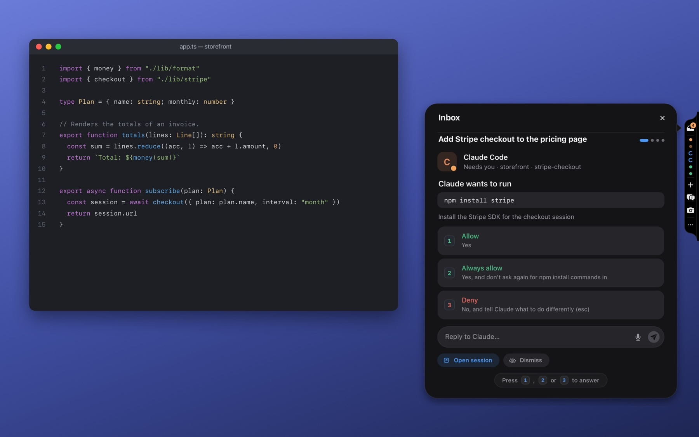
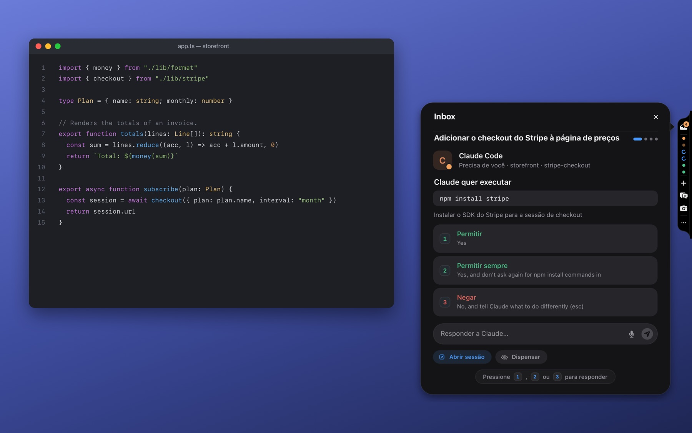
NotificationsNotificações
Notifications that carry the answer.Notificações que já trazem a resposta.
A question arrives with its choices as buttons, answered from the Lock Screen. Agents at work follow you in Live Activities, on the Lock Screen and in the Dynamic Island. Uma pergunta chega com as opções como botões e é respondida da tela bloqueada. Os agentes trabalhando acompanham você em Live Activities, na tela bloqueada e na Dynamic Island.
Nothing to set up: Pier on your Mac tells your iPhone and iPad what needs you through your own iCloud. A box can also push by itself with your own APNs key, when you build the app yourself. Nada para configurar: o Pier no seu Mac avisa o seu iPhone e o seu iPad pelo seu próprio iCloud. A box também pode enviar push sozinha com a sua chave APNs, quando você compila o app.
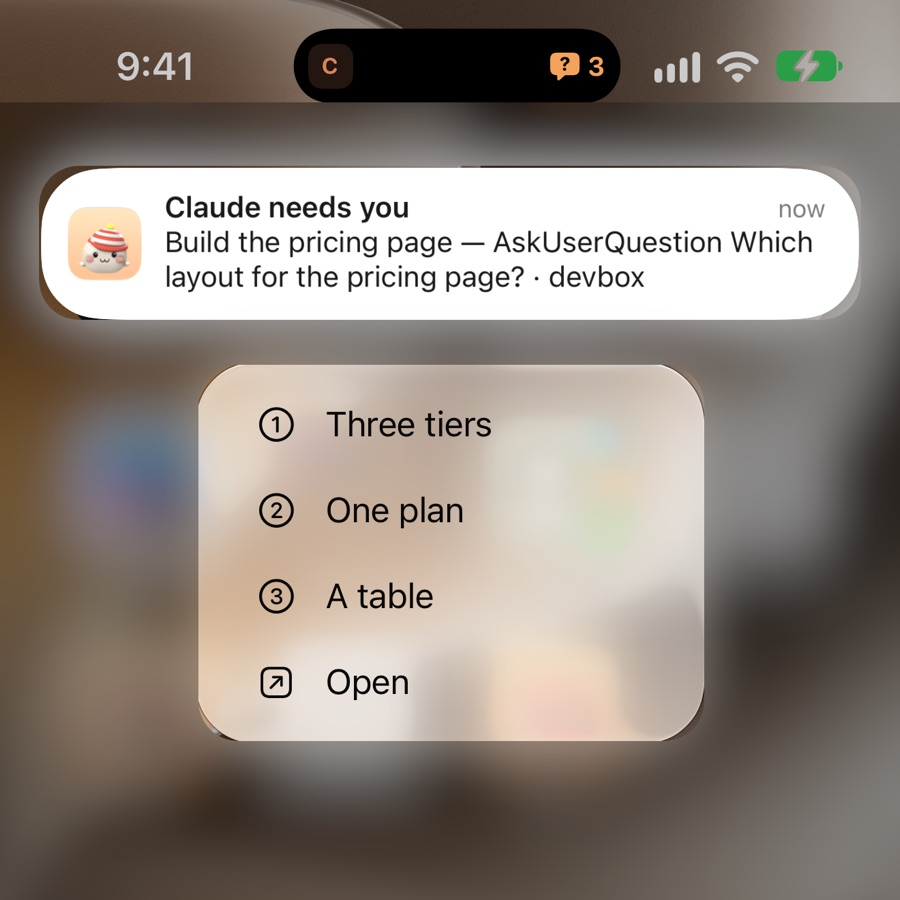
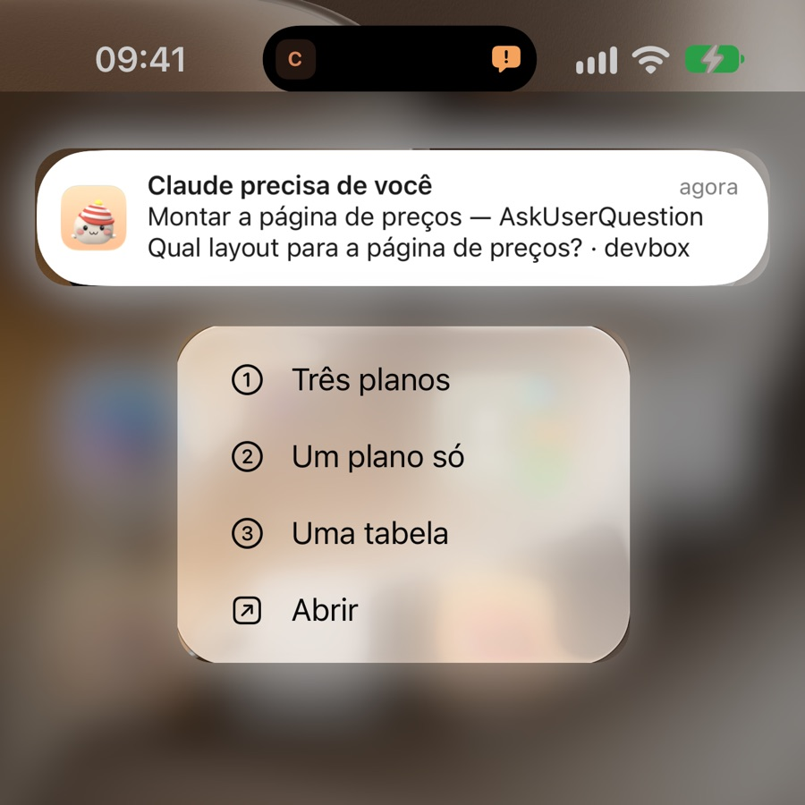
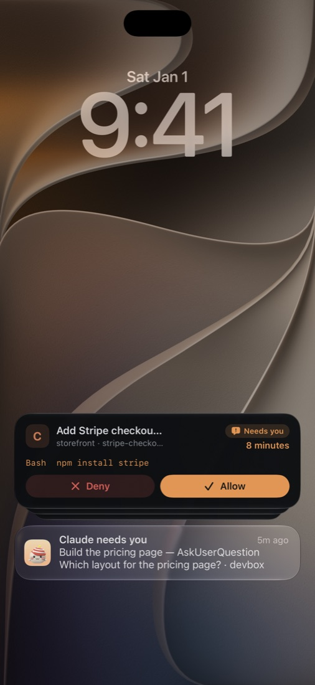
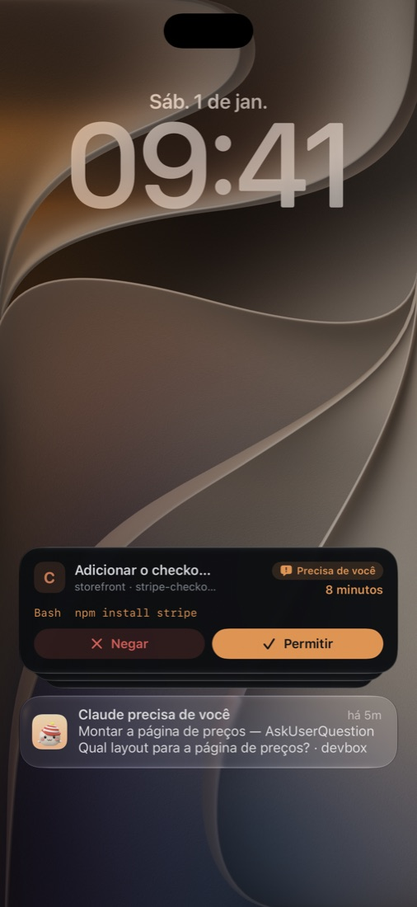
iPhone · iPad · MaciPhone · iPad · Mac
Made for each device.Feito para cada aparelho.
Tabs on iPhone; a sidebar, the ⌘K palette and keyboard shortcuts on iPad and Mac; light and dark. Abas no iPhone; sidebar, a paleta ⌘K e atalhos de teclado no iPad e no Mac; claro e escuro.
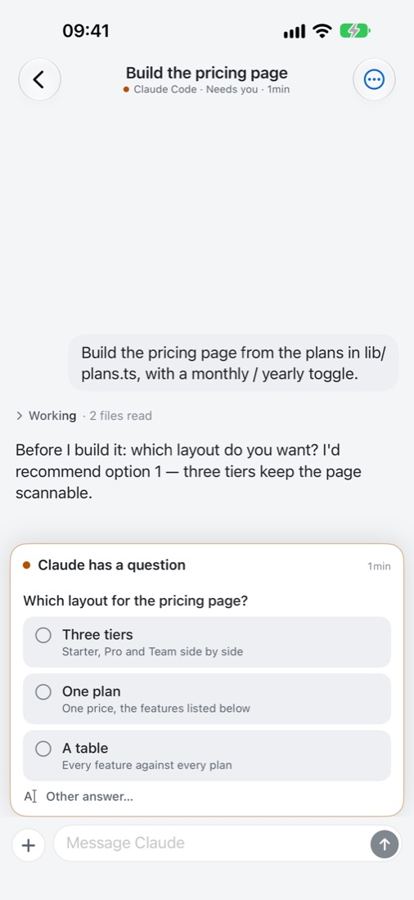
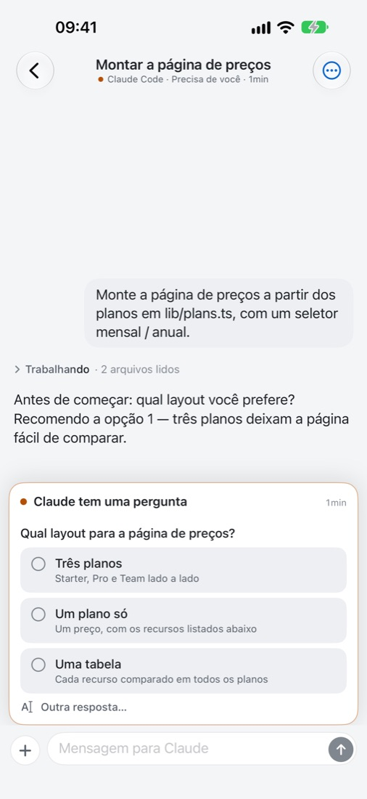
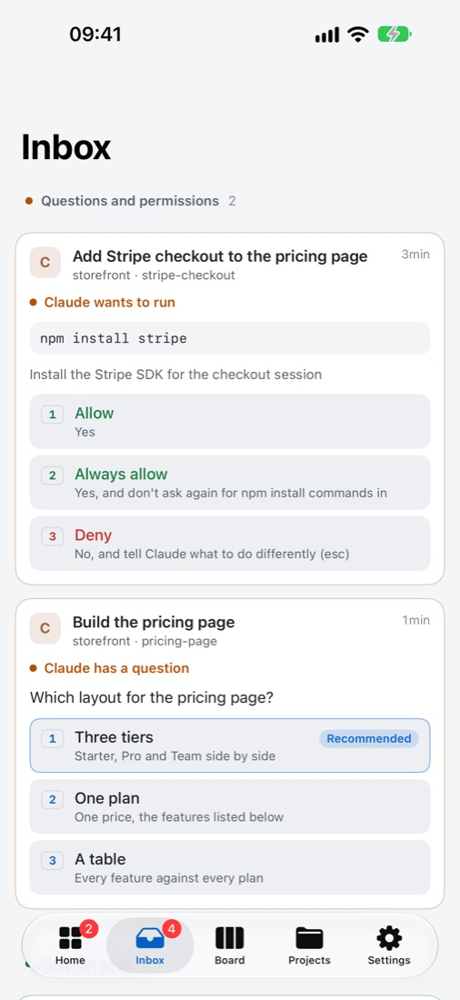
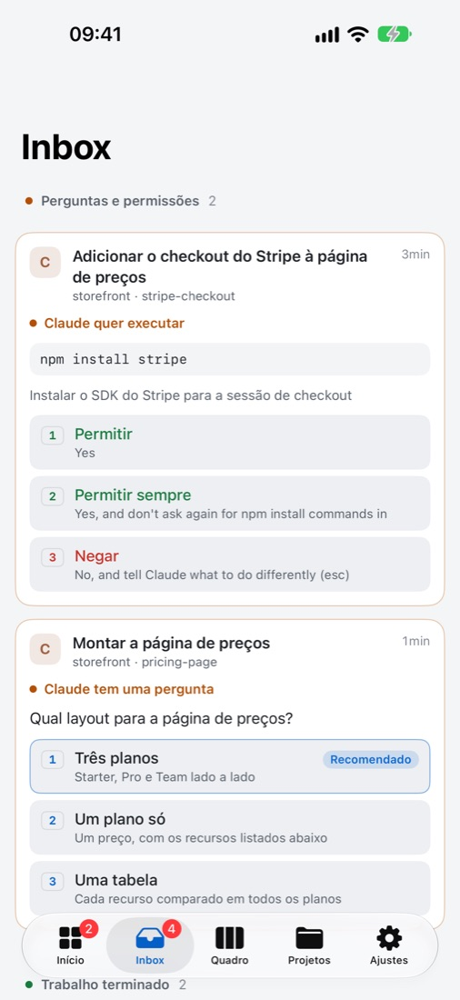
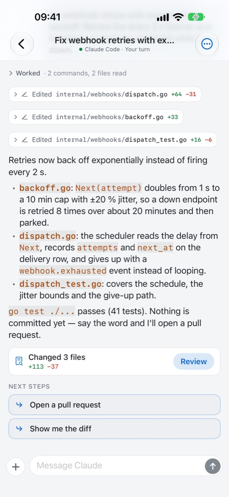
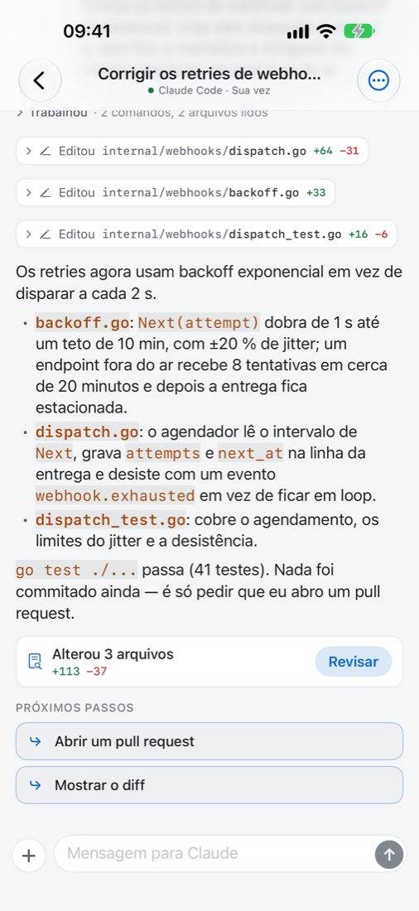
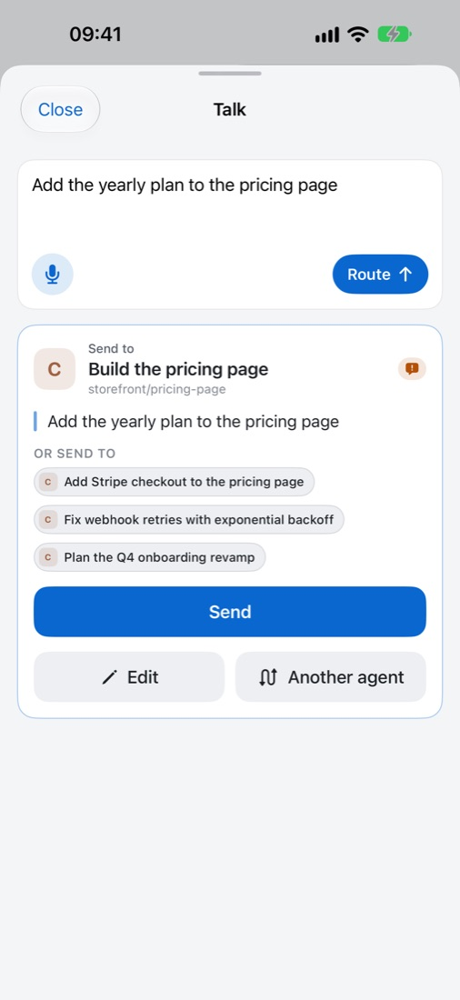
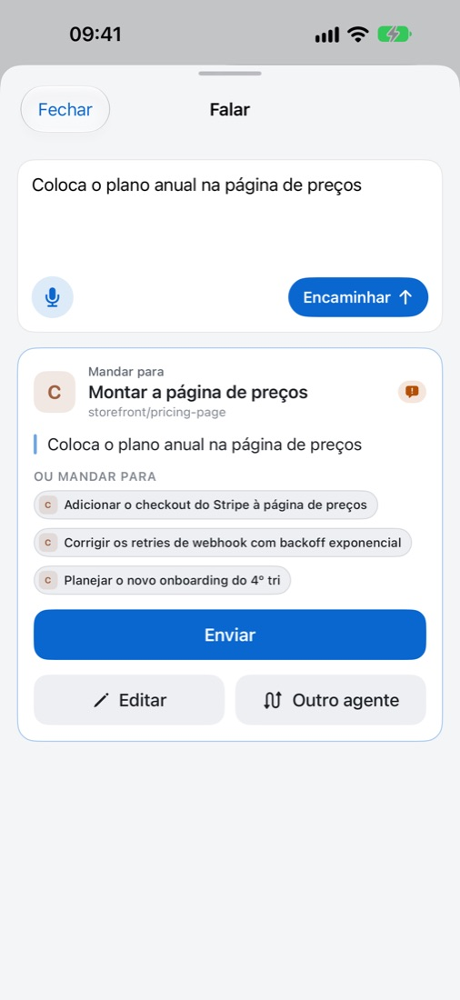
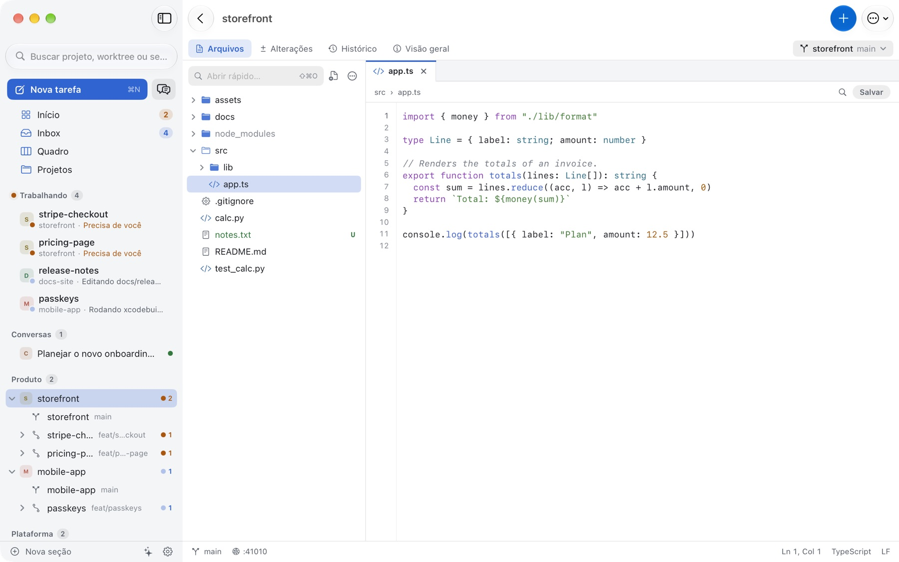
How it worksComo funciona
Your machines, your keys. Encrypted end to end.Suas máquinas, suas chaves. Cifrado de ponta a ponta.
The app talks to each box over mutual TLS, directly or through the Pier tunnel, which carries that encryption without being able to open it. There is no account: your code, prompts and conversations stay on your machines. O app conversa com cada box por TLS mútuo, direto ou pelo túnel do Pier, que carrega essa criptografia sem conseguir abri-la. Não há conta: seu código, seus prompts e suas conversas ficam nas suas máquinas.
Install pierdInstale o pierd
A small open-source server, on a Linux server or on your Mac. It runs the agents in tmux and follows them through their hooks. One command; reachable from anywhere through the Pier tunnel, no VPN.Um servidor pequeno e de código aberto, num servidor Linux ou no seu Mac. Ele roda os agentes no tmux e acompanha cada um pelos hooks. Um comando; acessível de qualquer lugar pelo túnel do Pier, sem VPN.
Pair oncePareie uma vez
Scan the QR code it prints. On your Mac, Pier pairs by itself, then brings your iPhone in with a code. The app and the box pin each other's keys.Escaneie o QR code que ele mostra. No seu Mac, o Pier pareia sozinho e depois leva o iPhone com um código. O app e a box guardam a chave um do outro.
Your agents, anywhereSeus agentes, em qualquer lugar
Answer, review and ship from your iPhone, iPad or Mac.Responda, revise e entregue pelo iPhone, iPad ou Mac.
curl -fsSL https://docktopier.com/install.sh | sh
Or npm install -g pierd, or brew install wagnerfnds/tap/pierd, then pierd setup. The step-by-step guide covers the rest.
Ou npm install -g pierd, ou brew install wagnerfnds/tap/pierd, e depois pierd setup. O guia passo a passo mostra o resto.
Get PierBaixar
Three ways to get it.Três formas de usar.
App Store
iPhone, iPad and MaciPhone, iPad e Mac
- Signed and ready to install, nothing to compileAssinado e pronto para instalar, sem compilar nada
- Updates arrive by themselvesAtualizações chegam sozinhas
- A demo to look around before setting up a boxUma demonstração para conhecer antes de preparar uma box
Mac
Direct download · macOS 14 or laterDownload direto · macOS 14 ou mais novo
- Notarized by Apple: open the .dmg and drag Pier to ApplicationsNotarizado pela Apple: abra o .dmg e arraste o Pier para Aplicativos
- The same app as the App Store's, for Apple silicon and IntelO mesmo app da App Store, para Apple silicon e Intel
- For a new version, download it again; the App Store's updates by itselfPara uma versão nova, baixe de novo; a da App Store se atualiza sozinha
Open sourceCódigo aberto
MIT licenseLicença MIT
- The app and pierd, all of it, on GitHubO app e o pierd, inteiros, no GitHub
- Build it with Xcode and your own Apple developer accountCompile com o Xcode e sua própria conta de desenvolvedor da Apple
- Push straight from your box with your own APNs keyPush direto da sua box com a sua própria chave APNs
Your code stays on your machines.Seu código fica nas suas máquinas.
No accounts, no analytics, no tracking. The AI touches — titles, recaps, commit messages — run on your box, with the agent you already use. Privacy policy Sem contas, sem analytics, sem rastreamento. Os toques de IA — títulos, resumos, mensagens de commit — rodam na sua box, com o agente que você já usa. Política de privacidade